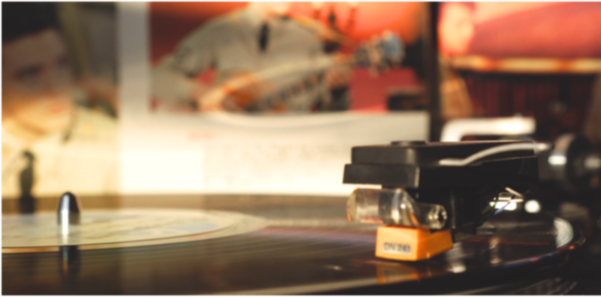

"Vinyl: För dig som tycker att musik ska vara lika tidlös som din stil."
I vår butik hittar du ett handplockat urval av klassiska album och sällsynta
skatter från olika genrer – från rockens råa energi till jazzens smidiga toner
och popens tidlösa refränger. Varje skiva berättar en historia,
och vi är här för att hjälpa dig hitta din.